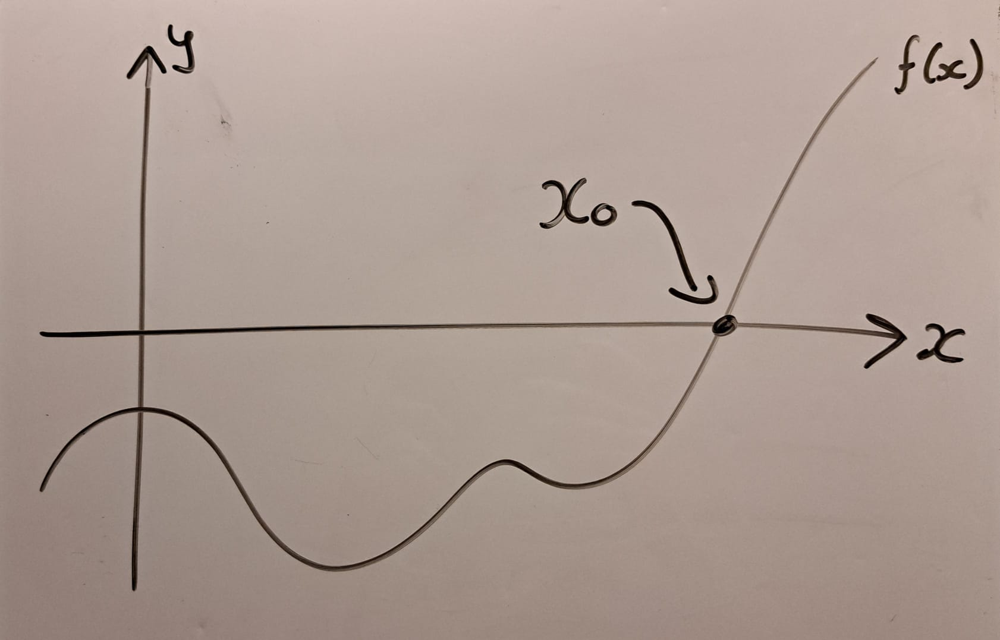

University Projects
In the summer of 2025 I completed a research project in Mathematics as the last third of my Master's degree. This consisted of a thesis and a presentation. For this, I studied Kernel Density Estimation. This is a method in non-parametric statistics to recover a probability density function from a sample, without placing restrictive assumptions on the density. In particular, I studied the convergence rates of these estimators, under some regularity assumptions on the density. The thesis is split into two parts. The first explores the problem in the classic setting, on the real line, and follows this book by Tsybakov. The second half considers the problem on more general metric spaces and catches up to some modern research done by my supervisor Dr. Galatia Cleanthous and her collaborators. This project earned a grade of 91%.
In 2024 (the third year of my undergraduate), my classmate Cillian Grall and I completed a project on the thermal creation of solitons. These are long-surviving, localised, non-linear wave-packets that appear in a scalar field subject to a multi-welled potential, where part of the field spills into another well. Our setting is some scalar field \(\phi(\vec{x},t)\) subject to the wave equation and a potential well \(V(\phi)\),$$ \frac{\partial^2\phi}{\partial t^2} = \nabla^2\phi - \frac{d V}{d\phi}.$$ We focused on the simplest case, a one-dimensional scalar field \(\phi\) with a double-welled quartic potential \(V(\phi)=\lambda(\phi^2-1)^2\), where \(\lambda\) is a coupling parameter. The system was discretised and subjected to periodic boundary conditions. This discretised system then acts as a pearl necklace, with each pearl moving with its own speed, being pulled down the walls of the potential, and tugging on its neighbours. Adding enough energy in the system allows some section of the necklace to cross the divide into the other well. This forms a large wave in the field whcih survives until the pearls happen to spill back over — a soliton! For a range of temperatures, the system was initialised using a Markov Chain Monte Carlo approach, called the Heat Bath Algorithm. (This was quite difficult, and I am still hugely proud of it.) The system was then evolved simply using the finite difference method, and the creation rate of solitons was calculated, and graphed against temperature. The code can be found here, and the report here. This project earned a grade of 87%.
In 2023 (the second year of my undergraduate), my classmates
Cillian Grall,
Ciaran McNamara
and I completed a project on the inflation of the early universe.
There are properties of our universe which seem unlikely, such as its
apparent flatness, but become credible if the universe underwent a
huge spatial growth in a short period of time. This idea is called
Cosmic Inflation. It is estimated that at least 60 e-folds of inflation must have
occurred. That is to say, points in space 1 unit apart would be
separated by \(e^{60}\approx 10^{26}\) units after some finite time.
Quite a lot! If we pick a pair of points in space, and track the
distance between them over time, calling this function the cosmic
scale factor \(a(t)\), we can interpret this as a measure of the
universe's size over time. In this project, we assumed a flat universe
dominated by a scalar field \(\phi(t)\), obeying the Friedman and
Klein-Gordon equations, $$H := \frac{\dot{a}}{a} =
C\sqrt{\frac{1}{2}\dot{\phi}^2 + V(\phi)}, \qquad
\ddot{\phi}+3H\dot{\phi}+\frac{dV}{d\phi}=0,$$where
\(C=M_p^{-1}\sqrt{8\pi/3}\) and \(M_p\) is the Planck length. We focus
on the simplest potential, the quadratic well
\(V(\phi)=\frac{1}{2}m^2\phi^2\). The Friedman equation causes \(a\)
to increase rapidly when \(\phi\) or \(\dot{\phi}\) are large. The
Klein-Gordon equation causes \(\phi\) to act roughly like a damped
oscillator, and decay towards the minimum of \(V\). Together, these
causes \(\phi\) to slowly settle towards the minimum and \(a\) to grow
until that time. This leads to a finite period of time where intense
growth is observed — cosmic inflation! Choosing some inital conditions
of \(\phi\) and \(\dot{\phi}\), the system can be evolved over time
(using an ODE solver) to see how much inflation occurs. In this
project, we explored which initial conditions of led to a sufficient
amount of inflation, finding this is easier than expected under our
simple model. We also attempted to study the impact of the mass
parameter \(m\), and even some different potentials \(V\). The Python
code can be found
here, and
the report
here.
Looking back on it now, this project was quite crap could have
been done better. But it was our first, so don't judge it too harshly!
Personal Projects
My ongoing project, starting August 2025, is making my own website. It will be a place for me to talk about things I like, mainly some Projects of mine such as my website.
Hilarious self-references aside, this has been a really fun project. Here is the repository, if you interested in how it works. It started as a theft of my friend's website, because his is pretty cool (and I liked the colour cheme). It is hosted for free using GitHub Pages. The only cost would be getting your own personalised domain name. I got mine from here, for about 20 euro a year, but there are many such sites. As I build more of it, I might have more to say...
The following are 'ready' soon, I am in the process of writing them up.
Here is a game a friend taught me on the drive to university, that spawned some questions I answered by using python.
The Game
A digit string is an ordered list of numbers (integers from 0 to 9 in our case), such as 15397. This is not to be interpreted as fifteen thousand three hundred and ninety seven, but as one followed by five, three, nine, and seven.
\(1\times (5-3)+9\div 7\) is an expression of the digit string 15397. Between the digits we place some operation from addition, subtraction, multiplication and division. We are allowed to use an operation as many times as we like (including not at all), to use as many parentheses as we like, but we cannot reorder the digits and every two digits must have an operation between them.
A solution of the digit string is some expression that evaluates to zero. Note that \(9-9\), \(1+2-3\), \(8-2\times 4\) and \(2-6\div (1+2)\) are solutions of 99, 123, 824 and 2612 respectively. Clearly any digit string which contains a zero can be solved using only multiplications. Eg. \(5\times0\times3\) is a solution of 503. \(1\times (5-3)+9\div 7\) is clearly not a solution to 15397, but can you find one? \((1+5+3-9)\times7\)
Given some source of digit strings, the game is to be the first to find a solution. For example, Irish vehicle registration plates (numberplates) take the form 162-D-15397. On the drive to university, we would play the game on the other cars around us. I won slightly more often (he was driving).
Some questions
Firstly, how many digit strings can be solved? This answer is quite clearly infinity. Since 11 is solvable, so is anything that contains 11, such as 4627115, of which there are infinitely many. The second question is less obvious.
Some strings cannot be solved. For example, 1, 12, 124, 8985. How many cannot be solved? As strings get longer, it becomes easier to solve them, so we expect the unsolvable strings to get increasingly rare. But, are there only finitely many of them? If so, what is the largest of them? Have a think about it.
An interesting probability question I worked on!
An interesting probability question I worked on!
The following are nowhere near ready, so don't expect an update anytime soon. Feel free to ask me about them though, I have thought about them a lot, and have some scraps written in places.
Using only a limited number of algorithms, like those of a 4-Look-Last-Layer approach, what is the average number of moves needed to solve the last layer of a Rubik's cube? These algorithms would link the last-layer states into a connected graph, and this question can be answered by traversing the graph to, or from, the solved state. A simple project, that I haven't found time to work on yet...
This is a really bad method.
Root-finding is the problem of finding where a function is zero. In the diagram below, it means finding where the curve crosses the \(x\)-axis. This location is called the root, and is denoted \(x_0\). Sometimes, we cannot solve this exactly, and must turn to numerically approximating it. There are many good methods to do this. Using \(N\) evaluations, the bisection method can achieve an error that is \(\mathcal{O}(2^{-N})\), and assuming the function is 'nice', there are much faster methods available.
To use this new method, we must place several strong assumptions on the function \(f\). First, there exists a complex extension of \(f\) on some known open subset \(U\subset\mathbb{C}\) that contains the root \(z_0\) we want. Second, we can construct some loop \(\gamma\) within \(U\) that encloses \(z_0\). We also need the winding number of \(\gamma\) about \(z_0\) to be 1, and for \(z_0\) to be zero of order one of \(f\).
Here is a schematic diagram of the complex plane around the root \(z_0\). The dashed line represents the boundary of \(U\). Within this region, \(f\) is assumed to be holomorphic (very very smooth and nice). The loop \(\gamma\) is within \(U\), and goes around \(z_0\) once, counter-clockwise.

Then, if we integrate \(z/f(z)\) and \(1/f(z)\) along the curve \(\gamma\), the resulting ratio will be the root we are looking for!
$$\left.\oint_\gamma\frac{z}{f(z)}dz \right/ \oint_\gamma\frac{1}{f(z)}dz = z_0 $$This is called a coutour integral, where \(\gamma\) is the contour. Evaluating these can be fun, but most analytic methods revolve around knowing the singularities of the integrand. That is, where the function to be integrated diverges. In this case, there is exactly one, and it is \(z_0\)... but we don't know where it is! That is the whole point! So we must turn to numerical approximation.
This still doesn't sound too awful. Just numerically approximate the integral, and this will still approximate the root. Using a smooth contour \(\gamma\), and numerically integrating using the trapezoid method with \(N\) evaluations, we can show that the resulting error will drop faster than all powers of \(N\). What we cannot do, however, is guarantee that the error will drop faster than that of the bisection method. Which is embarrassing, as that is perhaps the most simple root-finding algorithm, and this is far, far more expensive!
So from both analytical and numerical points of view, this method is useless. But because it pops out of some really nice maths, it gets rediscovered from time to time. It got a bit of media fanfare when it was used offhand in this paper from 2020. The author derived a transcendental equation, the root of which was a number that solved the Grazing Goat problem . At the end, the author constructs such an integral from the equation, and claims this is a "closed-form solution" for the root. I have strong opinions on this wording — it is a load of shite. Perhaps I will elaborate sometime...
Anyway, despite the fact the method is terrible, I did spend some time thinking about how to improve it. The rough goal is to steel-man the method — to make a stronger version of it, and then to demonstrate this stronger version is still bad. (If you want some spoilers, ask me.)
If you have any problems you think I would enjoy, please do share ;)